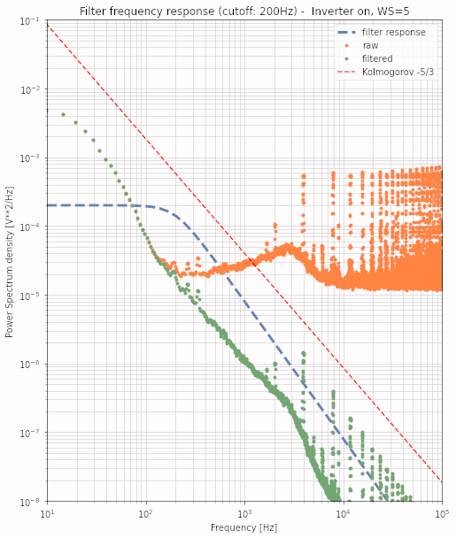
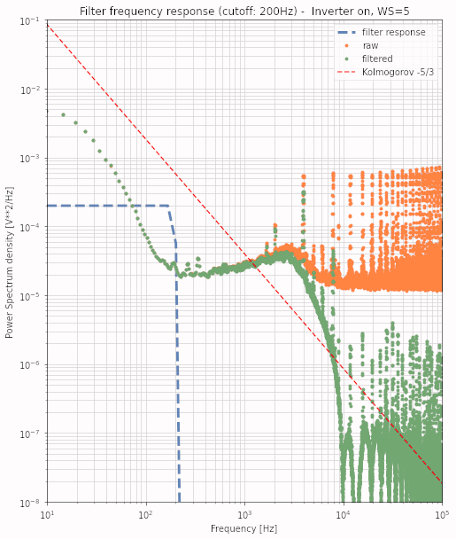
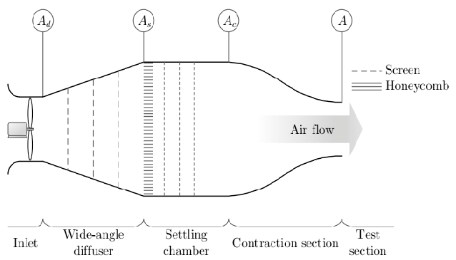

Φιλτρα συχνοτητων
Τ.Ε.Ι. Κρητης
Νικολας Τοροσιαν
2023-06-25 Κυρ 16:00
Καθηγητες
- Επιβλέπον καθηγητής
- Παπαδάκης Νικόλας
- Υπ. Εργαστηρίου Α.Π.Ε
- Κονταξάκης Κωv/νος
Τι ειναι σημα
- Συνεχές / Διακριτό
- Ημιτονοειδές / Παλμικό
- δυαδικό
- π.χ. ’καλημέρα’ == 11001110 10111010 11001110 10110001 11001110 10111011 11001110 10110111 11001110 10111100 11001110 10110101 11001111 10000001 11001110 10110001
- Να εμπεριέχει πληροφορία
- Δηλαδή διακριτές διαφορές στην ισχύ ή/και την συχνότητα
- Περιοδική συμπεριφορά
- Η επανάληψη στο χρόνο είναι από τα σημαντικότερα χαρακτηριστικά των σημάτων.
πως χρησιμοποιειται
- Συνήθως για συμπίεση πληροφορίας
- Επικοινωνία-Διαδίκτυο
- Αλλά και ως μέτρο αναφοράς
συμπιεση πληροφοριων
Εδω καλο ειναι να πω για την δυνατοτητα αποθήκευσης μεγαλου ογκου πληροφοριων με λιγο αποθηκευτικο χωρο και να μπω λιγο στην εννοια της κωδικοποιησης-αποκωδικοποιησης σηματων βαζω ανετα αλλες 2 διαφανειες
παγκοσμιος ιστοτοπος
εδω μπορω να αναφερθω στην σημασία των σηματων σε ιντερνετ και τηλεπικοινωνια.
σημειο αναφορας
μετρητικές συσκευες, διαπασον και αλλες ωραιες εικονες.
διαχειρηση δεδομενων
Η καταγραφή καθώς και ο τρόπος αποθήκευσης καθορίζονται από τον όγκο τους σε mB. Ένας επίσης καθοριστικός παράγοντας είναι το όριο που μπορεί να μεταφερθεί μέσω διαδικτύου καθώς πολλές φορές οι ερευνητές βρίσκονται σε διαφορετικές ηπείρους. Έτσι είναι αναγκαίο να καθοριστεί ο απαραίτητος όγκος δεδομένων για την εξαγωγή συμπερασμάτων.
καταγραφη
Σήμερα με τον εκθετικό ρυθμό ανάπτυξης της τεχνολογίας συσκευές καταγραφής ηλεκτρικών σημάτων με πολλές δυνατότητες, όπως παλμογράφο σε σύνδεση με USB ή/και ανάλυση φάσματος, υπάρχουν σε προσιτές τιμές.
επεξεργασια
Συνήθως γίνεται σε μεταγενέστερο χρόνο και τις περισσότερες φορές απαιτεί μεγάλη υπολογιστική ισχύ σχετικά με τον όγκο τους. βαλε παραδειγμα εδω
συγκριση
Φίλτρα διέλευσης χαμηλών συχνοτήτων
IIR ☟

FIR ☟

με διάφορες αποκρίσεις ☟
IIR
Φίλτρα άπειρης κρουστικής απόκρισης
Σε αντίθεση με τα FIR έχουν την δυνατότητα μεγάλης μείωσης της ισχύος των συχνοτήτων μετά την συχνότητα κατακρημνισμού (cut-off frequency), με ελάχιστη επιρροή των συχνοτήτων στο φάσμα διέλευσης. Η ακρίβειά τους οφείλεται στην μέθοδο της ανάδρασης, χρησιμοποιώντας την έξοδο του φίλτρου κατά την διαδικασία για την βελτιστοποίηση των χαρακτηριστικών του πριν την επόμενη εφαρμογή.
FIR
Φίλτρα πεπερασμένης κρουστικής απόκρισης
Έχουν την δυνατότητα απόρριψης συχνοτήτων που απέχουν κατά ένα ποσό από την συχνότητα αποκοπής του φίλτρου. Όπως θα παρατηρήσουμε και στο διάγραμμα δεξιά υπάρχει σημαντική καθυστέρηση από την επιλεγμένη συχνότητα και την απομείωση του φάσματος από αυτήν και μετά. Αυτό είναι χαρακτηριστικό των συστημάτων FIR καθώς δεν εφαρμόζουν την τεχνική της ανάδρασης.
Εργαστηριακη εγκατασταση

Ευχαριστω για τον χρονο σας